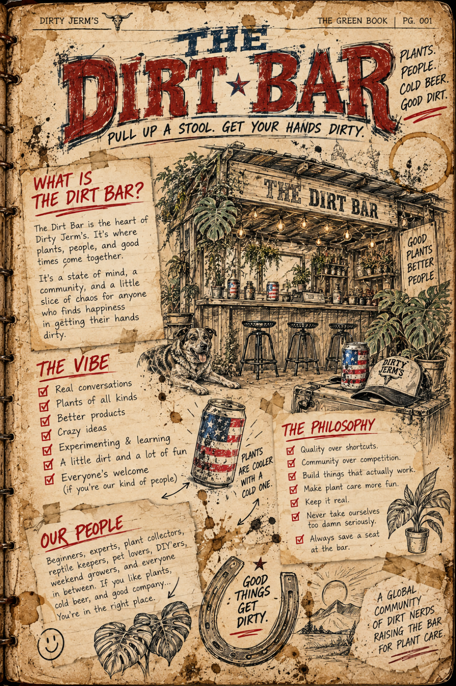
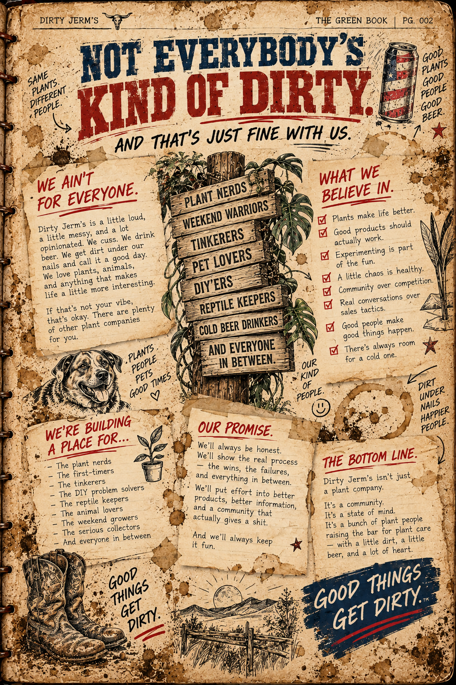
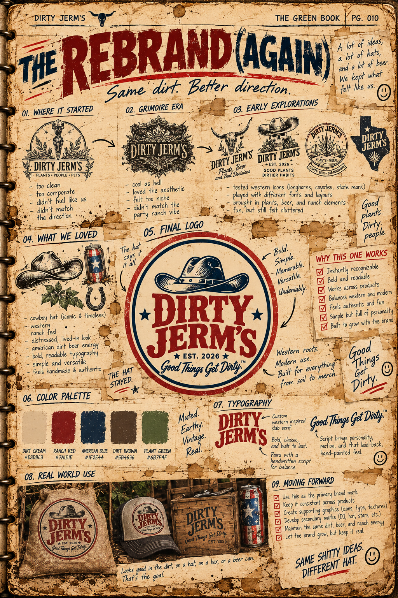
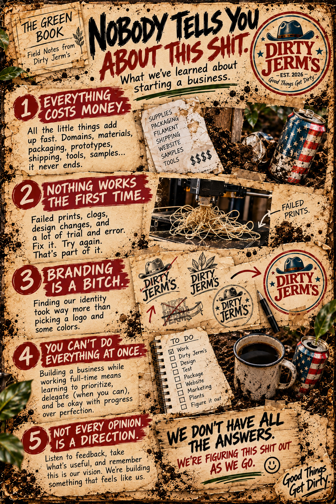
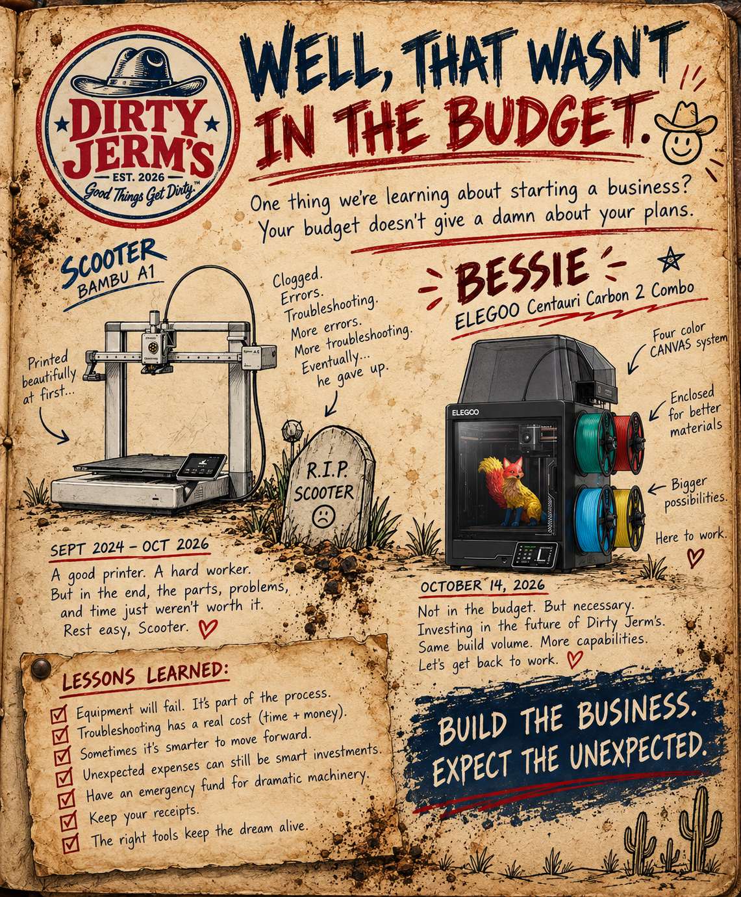

RECORDS LEDGER.
Every dirty deed deserves a paper trail. Welcome to the running record of a plant company still finding its boots.
THE GREEN BOOK.
NO CLEAN COPIES.
Every respectable establishment keeps records. Ours just happen to be covered in dirt.
The Green Book is our real working field journal: a place for sketches, experiments, decisions, mistakes, and the lessons we pick up while building Dirty Jerm's. The physical book is the original. This ledger is where we'll share pieces of that story.
THE FIRST ENTRIES.
Five pages from the original Green Book. The ideas, the rebrands, the lessons, and the unexpected expenses — straight from the dirt.

ARCHIVE 01 / THE DIRT BARWhere the Dirty Jerm’s story starts.
ARCHIVE 02 / NOT EVERYBODY’S KIND OF DIRTYWho we are, and who we’re here for.
ARCHIVE 03 / THE REBRAND (AGAIN)Same dirt. Better direction.
ARCHIVE 04 / NOBODY TELLS YOU ABOUT THIS SHITLessons learned while building a business.
ARCHIVE 05 / WELL, THAT WASN’T IN THE BUDGETScooter, Bessie, and the unexpected.THIS STORY AIN'T FINISHED.
New ideas will come. Plans will change. Some things will work, and some will head straight for the scrap pile. When there's a story worth telling, we'll write it down.
Curious about what we're building right now? Head Back of House for a look at the work behind the goods.